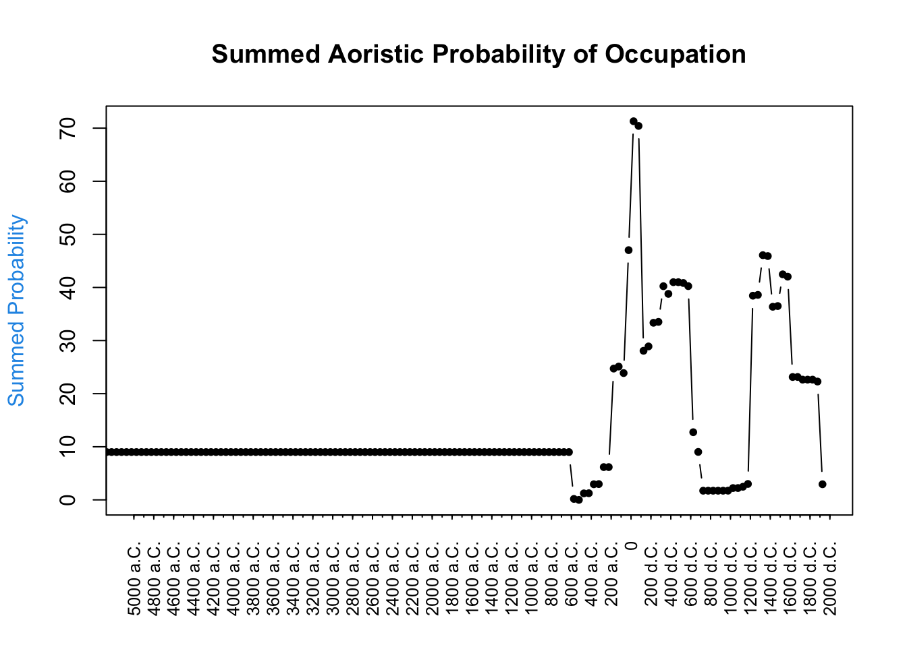
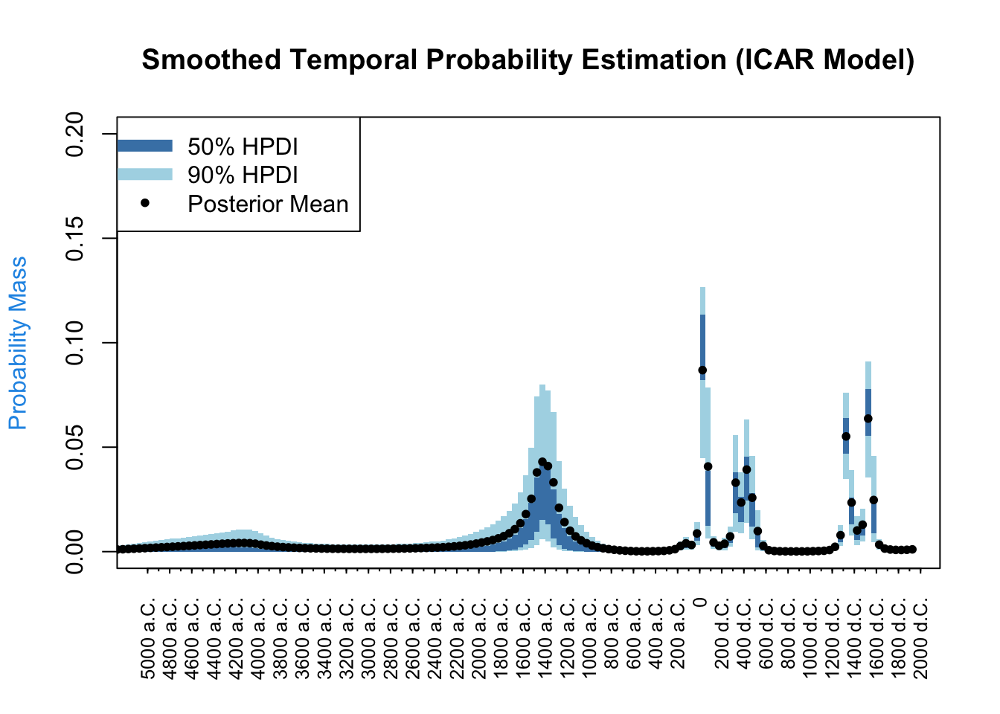

Cronologia
La datazione derivante dalle tipocronologie ceramiche è tipicamente espressa in forma di intervalli di tempo, riflettendo l’incertezza intrinseca nella classificazione cronologica. Ogni frammento ceramico è quindi associato a un intervallo specifico, che può essere più o meno ampio a seconda della precisione della tipocronologia o di eventuali contesti stratigrafici. L’approccio aoristico utilizza questi intervalli senza forzare una data specifica: invece di scegliere un punto centrale arbitrario, distribuisce uniformemente la presenza di ciascun reperto lungo tutto il suo intervallo di datazione. Questo metodo consente di analizzare materiali con datazioni diverse in maniera coerente, evidenziando quali periodi sono più frequentemente coperti dagli intervalli di datazione.
È fondamentale distinguere tra frequenze e probabilità di occupazione o esistenza. La somma aoristica non rappresenta la reale cronologia di occupazione di un sito, ma mostra semplicemente quanti reperti, in base alle loro date assegnate, potrebbero esistere in un dato periodo, senza fornire una misura diretta dell’intensità o continuità dell’occupazione. In altre parole, non è una stima della probabilità che il sito fosse effettivamente occupato in un dato momento, ma solo un conteggio ponderato dei possibili intervalli di esistenza dei reperti. Questo significa che un picco nella somma aoristica non indica necessariamente un’intensificazione dell’occupazione, ma potrebbe riflettere solo la maggiore durata delle tipologie ceramiche associate a quel periodo o una migliore documentazione archeologica.
Per superare alcune di queste limitazioni, abbiamo utilizzato i modelli ICAR (Intrinsically Conditional Autoregressive), che incorporano il concetto di autocorrelazione temporale. Analogamente all’autocorrelazione spaziale espressa dalla prima legge della geografia di Waldo Tobler (“Ogni cosa è legata a ogni altra, ma le cose vicine sono più legate di quelle lontane”), i modelli ICAR assumono che periodi vicini nel tempo siano probabilmente simili in termini di occupazione. Così come per la somma aoristica, anche l’ICAR non produce una cronologia diretta di occupazione, ma un modello statistico che regolarizza le frequenze aoristiche, riducendo la frammentazione artificiale dei dati e producendo una stima più continua della distribuzione dei reperti nel tempo.
Il grafico ICAR riportato di seguito incorpora questo principio di continuità temporale. La stima media a posteriori (posterior mean), rappresentata dai punti neri, è la media delle distribuzioni posteriori per ciascun intervallo temporale, calcolata integrando i dati osservati con le assunzioni del modello. Le fasce colorate (50% HPDI in blu scuro e 90% HPDI in blu chiaro) rappresentano gli intervalli di credibilità, fornendo una misura dell’incertezza associata a ciascuna stima. Questo approccio non solo smussa le fluttuazioni casuali nei dati, ma fornisce stime più robuste, soprattutto nei periodi in cui le osservazioni sono scarse. Quando i dati sono limitati, il modello ICAR “prende in prestito” informazioni dai periodi adiacenti, producendo una ricostruzione cronologica più coerente e interpretabile.
Rispetto alla somma aoristica, i modelli ICAR offrono due vantaggi principali: permettono di evidenziare processi continui e riducono l’impatto di anomalie o lacune nei dati. Grazie alla modellazione bayesiana, l’inclusione dell’incertezza fornisce non solo le tendenze principali, ma anche una misura chiara dell’affidabilità delle stime.
Entrambi i metodi operano sui dati a disposizione, che sono una rappresentazione indiretta dell’occupazione basata sulla tipocronologia ceramica. Per ottenere una vera ricostruzione della cronologia di occupazione, sarebbe necessario integrare questi risultati con altri tipi di dati, come scavi (e quindi stratigrafie), datazioni assolute o indicatori funzionali della presenza umana.


Informazioni supplementari
Macroclassi cronotipologiche
| Materiale | Datazione_da | Datazione_a |
|---|---|---|
| laterizi | -399 | 1599 |
| tegole_piane_romane | -300 | 699 |
| tegola_pettinata | 300 | 699 |
| macine | NA | NA |
| scorie_metalliche | NA | NA |
| ceramica_acroma | -399 | 1799 |
| ceramica_acroma_medievale | 1200 | 1599 |
| ceramica_protomaiolica | 1200 | 1399 |
| ceramica_dipinta | -399 | 1399 |
| ceramica_RMR | 1200 | 1399 |
| ceramica_vernice_rossa_interna | 1 | 199 |
| ceramica_smaltata | 1400 | 1899 |
| ceramica_invetriata | 1200 | 1899 |
| ceramica_invetriata_verde | 1201 | 1399 |
| ceramica_doppio_bagno | 1300 | 1499 |
| ceramica_vetrina_pesante | 1000 | 1099 |
| ceramica_invetriata_graffita | 1500 | 1899 |
| ceramica_graffita_bizantina | 1100 | 1299 |
| ceramica_maiolica | 1400 | 1899 |
| ceramica_invetriata_eta_moderna | 1400 | 1899 |
| pareti_sottili | -25 | 150 |
| ceramica_TSI | -25 | 99 |
| ceramica_TSA | 101 | 650 |
| ceramica_TSA_A | 175 | 299 |
| ceramica_TSA_C | 175 | 499 |
| ceramica_TSA_D | 300 | 625 |
| ceramica_eastern_sigillata | -25 | 299 |
| ceramica_CAC | 175 | 325 |
| ceramica_PRSW | 400 | 599 |
| ceramica_fuoco | -399 | 1799 |
| ceramica_ICW | 201 | 299 |
| ceramica_fuoco_invetriata | 1300 | 1899 |
| ceramica_lucerna | 1 | 599 |
| ceramica_dolia_GC | NA | NA |
| ceramica_impasto | -6000 | -600 |
| ceramica_vernice_nera | -499 | -100 |
| ceramica_amphoras | -199 | 599 |
| ceramica_amphoras_italic | -199 | 199 |
| ceramica_amphoras_african | 200 | 599 |
| ceramica_amphoras_eastern | 1 | 550 |
| ceramica_geometrica | -800 | -300 |
| ceramica_pasta_grigia | -199 | -1 |
| ceramica_non_identificata | -399 | 1799 |
| pesi_telaio | NA | NA |
| pesi_pesca | NA | NA |
| intonaco | NA | NA |
| vetro | NA | NA |
| selce_lavorata | -6000 | -600 |
| pipa_fittile | NA | NA |